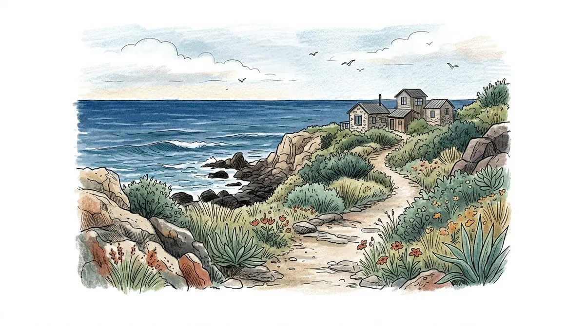

Memoria y sabores
Isla Negra
Referente territorial · visita por validar
Localidad de la comuna asociada al Litoral de los Poetas. Visita por validar.

Qué sabemos
Isla Negra es parte de la comuna de El Quisco y se asocia al destino turístico Litoral de los Poetas.
Los relatos y hitos de una posible ruta se definirán con actores locales antes de publicarse.
Fuentes: logotipo comunal de El Quisco (carpeta de recursos) y chile.travel, citado en el Documento central del proyecto (8/11/2026).
Ficha práctica
| Por confirmar | |
| Duración | Por confirmar |
| Por confirmar | |
| Por confirmar | |
| Por confirmar |
Sin tiempos ni accesos inventados: estos datos se completarán después de validar el recorrido.